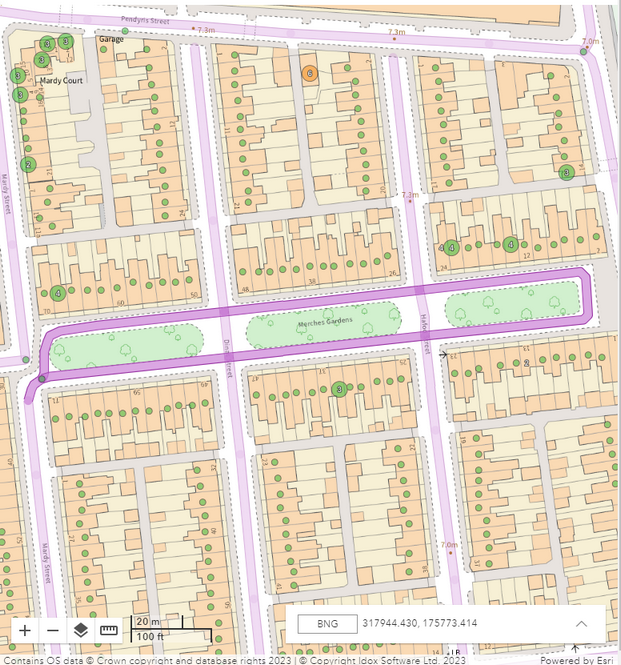
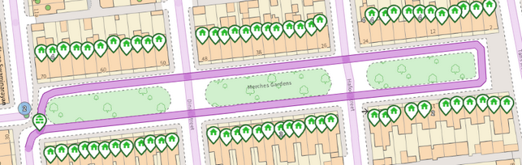

The Map |
Top Previous Next |
|
In the map there is the underlying Base mapping and other chosen map layers together with all the graphical iManage gazetteer street and property information. The Map layers displayed here are configured by an Administrator - see Map layers for details. There are General Map Tools which are available on all maps displayed in iManage Cloud, as well as additional tools when the map is displayed alongside the Property or Street form for maintaining the property or street geometry. If there is more than one property at a specific point on the map then you will see a larger icon with the number of properties at that location displayed in the middle.  If you have performed a search and pressed enter so the results are shown in the Explorer then, all of the matching results are displayed as larger icons if they are properties, and a darker colour if they are streets e.g.  |